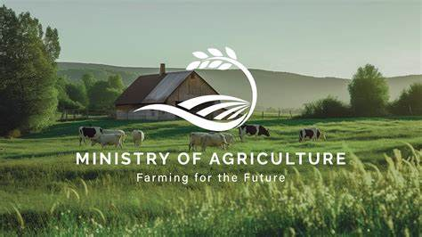

The Mwache Multi-purpose Dam is a Vision 2030 flagship project designed to permanently resolve the chronic water crisis in Mombasa and Kwale counties. Located on the Mwache River at Fulugani village in Kwale County (22km west of Mombasa), the 87.5-metre concrete gravity dam will impound 118 million cubic metres of water — supplying 186,000 cubic metres per day to Mombasa and 45,000 m³/day for irrigation in Kwale.
Co-financed by the World Bank (USD 255M) and the Government of Kenya (land compensation at KSh 4.6B), construction is by Sino Hydro Corporation of China. Overall progress stands at 28% (March 2025), with the lower check dam at 68% and concreting of the main dam underway 24 hours a day. Mombasa, with a population exceeding 1.2 million, currently relies entirely on springs and groundwater from neighbouring counties. This dam will make the city water-secure for decades.

Active concreting at the Mwache Dam site — underway 24 hours a day
68% complete lower check dam with stilling basin and approach channel
The Mwache River basin at Fulugani, Kwale County — 22km west of Mombasa